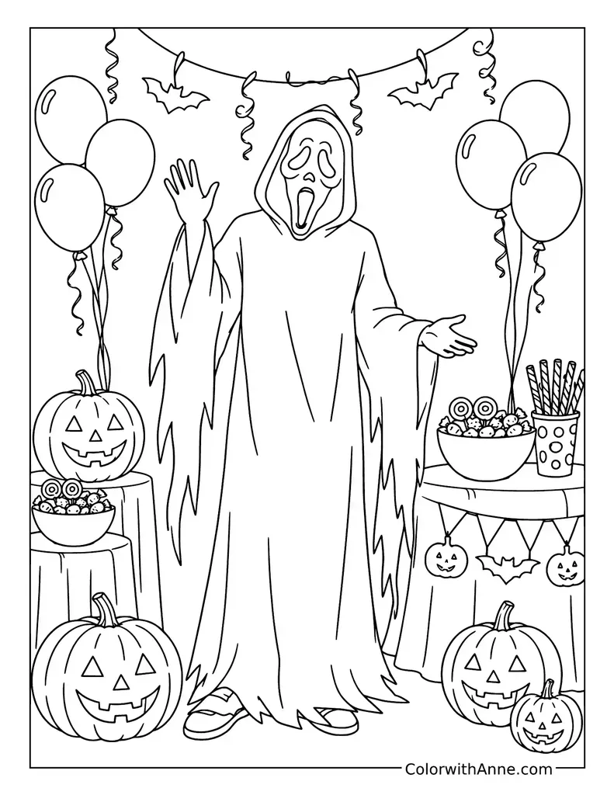
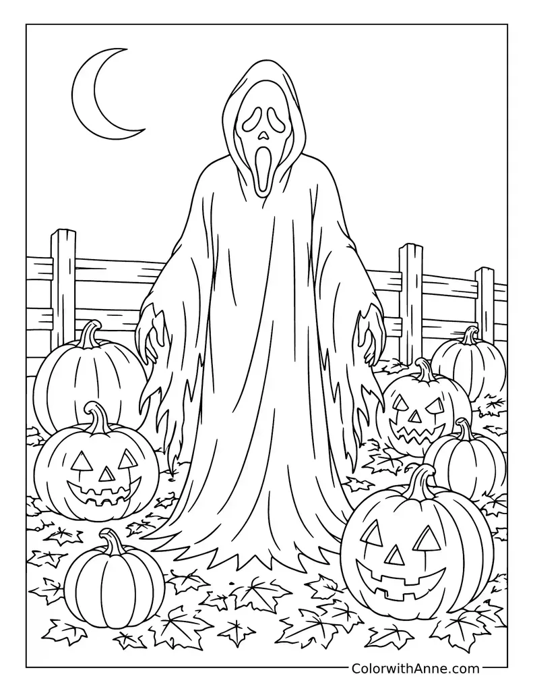
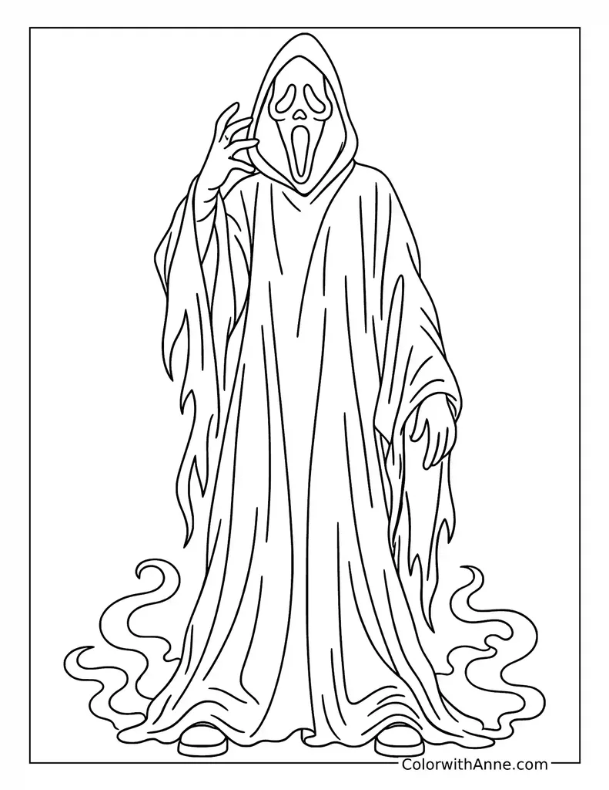
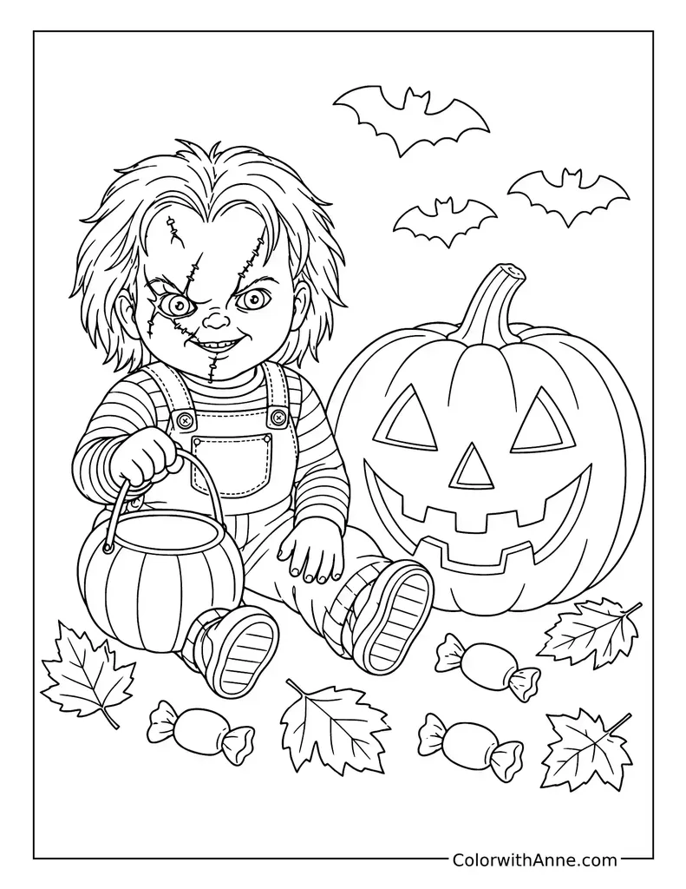
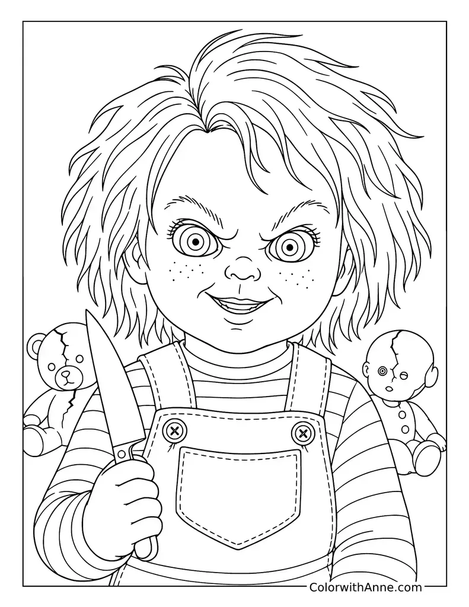
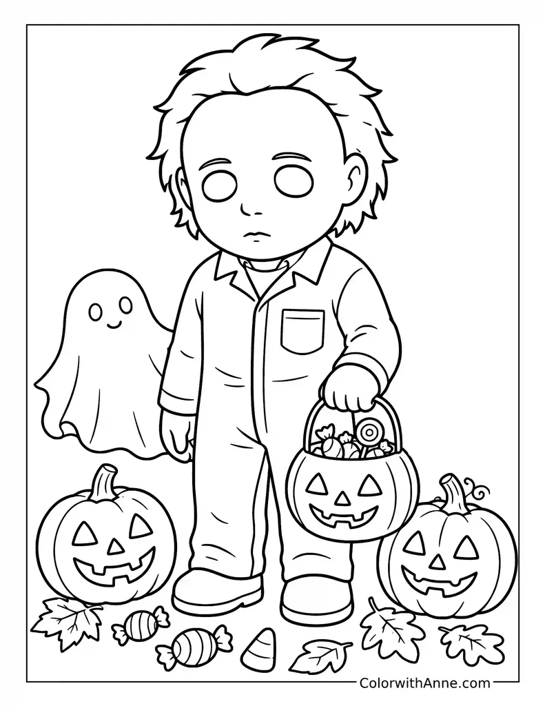
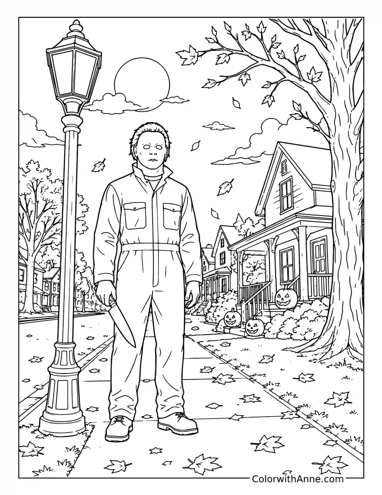
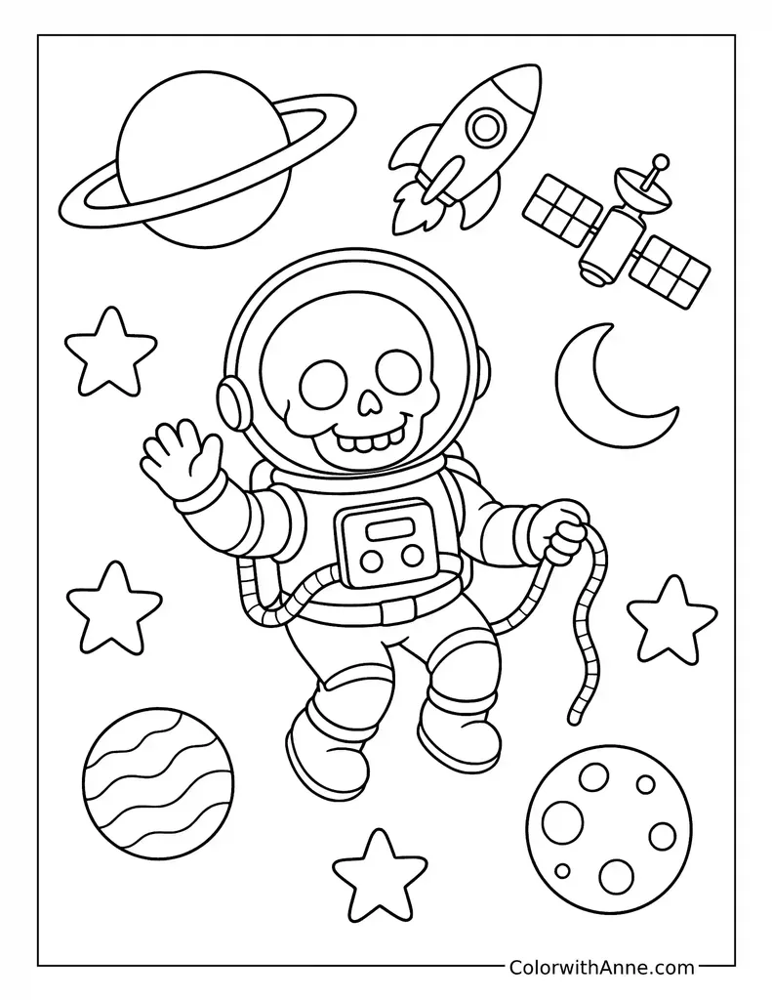
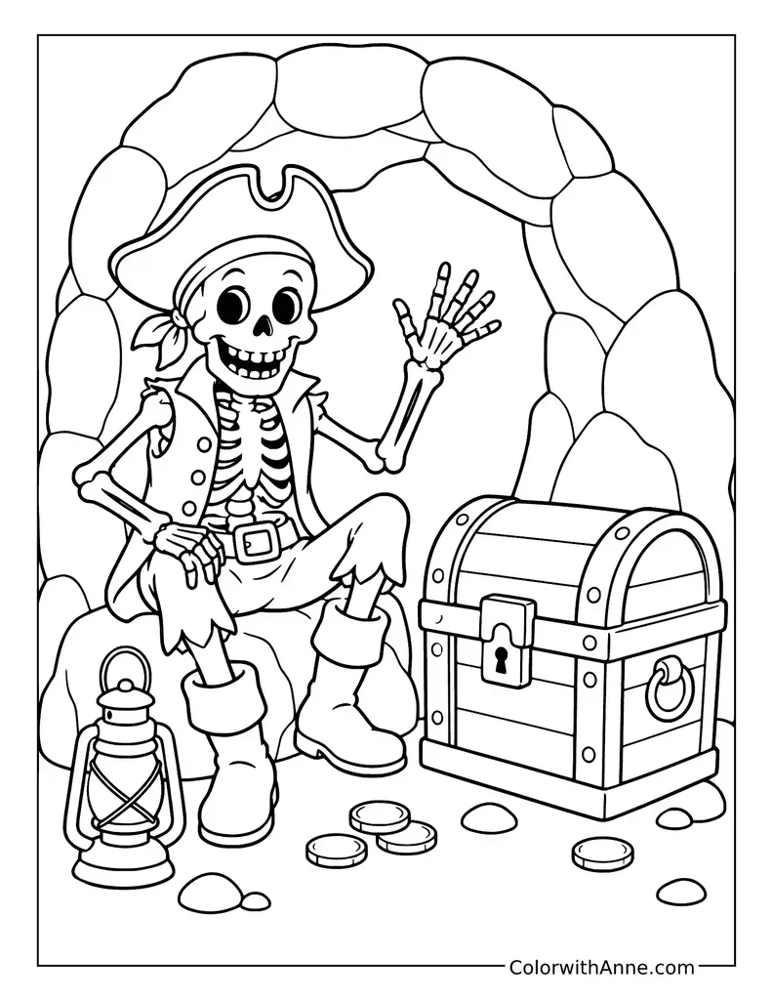
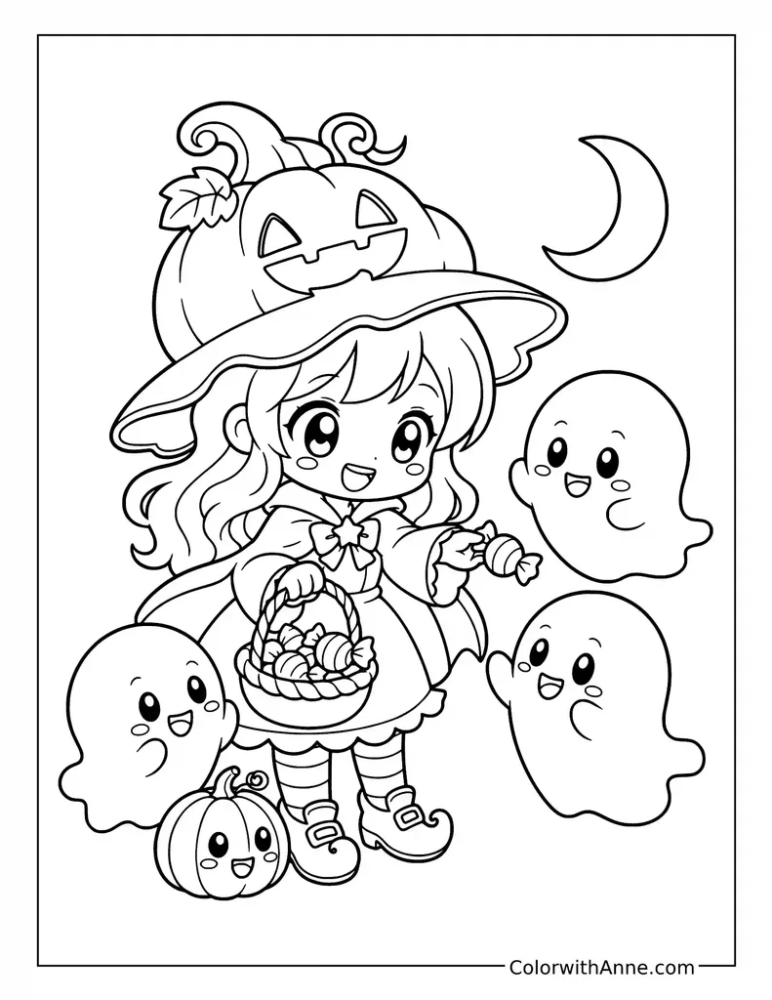

Ghostface Halloween Party
Ghostface crashes a Halloween party, pumpkins and spooky decorations everywhere.
The official preview catalog
Color with Anne helps children, parents, and teachers discover themed coloring activities for home, classrooms, parties, and quiet creative time. Explore recent additions and selected previews here, then print from the official website.
About the website
Color with Anne brings together animal, holiday, popular-interest, and everyday coloring themes with clear previews and straightforward access to printable pages.
The maintained website is the authoritative source for downloads, usage guidance, and the newest collections. This repository provides a smaller, structured window into that work.
Recently added
Updated . These text links lead to the newest topic pages on the official website.
Images and printable files for these recent additions remain on Color with Anne and are not copied into this repository.
Featured preview collection
Each preview shows the full composition. The official topic page is the single source for high-quality A4 and US Letter downloads.

Ghostface crashes a Halloween party, pumpkins and spooky decorations everywhere.

A moonlit pumpkin patch with Ghostface lurking between the vines.

The iconic screaming mask and black robe, full body, ready for your darkest palette.

Chucky the doll guards a jack-o'-lantern and a pile of Halloween candy.

Stitched face, wild hair, striped shirt — the classic doll portrait.

A chibi Michael Myers with his white mask and a friendly pumpkin.

Michael Myers on a dark Halloween night, jack-o'-lanterns glowing.

A cute skeleton astronaut floating through space with stars and planets.

A grinning pirate skeleton beside a treasure chest full of gold.

A chibi witch with her candy bucket and friendly little ghosts.
Made to be understood
The repository includes a machine-readable catalog describing each scene's subject, difficulty, preview path, alt text, official source, and license. This makes the collection understandable without turning GitHub into a duplicate download site.
View the JSON catalogWeb-sized previews load quickly and show the full composition. The print-quality PDFs remain on Color with Anne, where updates and licensing information have one authoritative home.
Continue exploring
This repository will grow one reviewed, original theme at a time. The maintained website has more printable activities for home and classroom use.